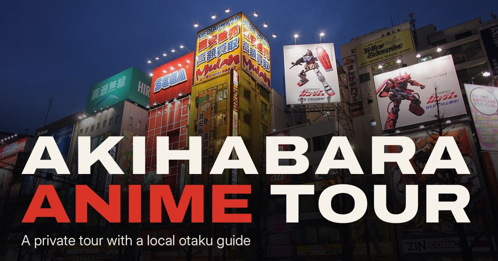
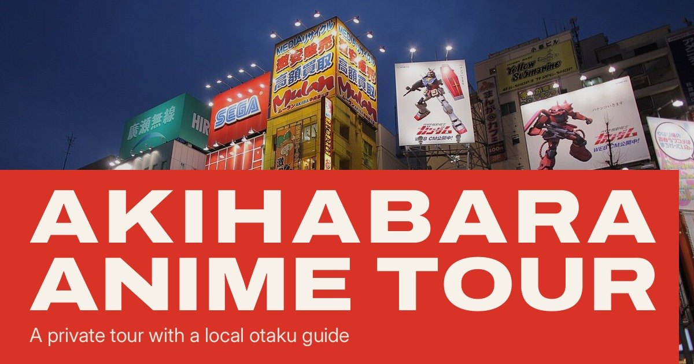
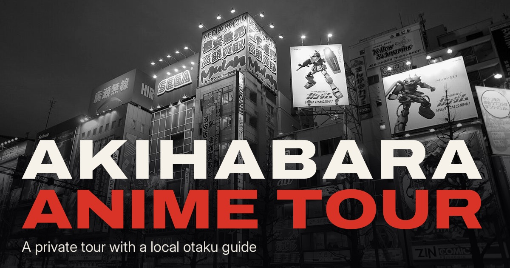
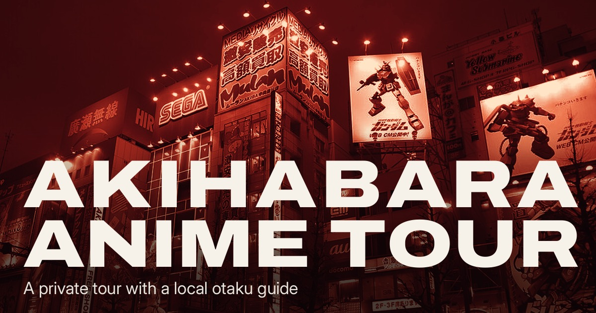
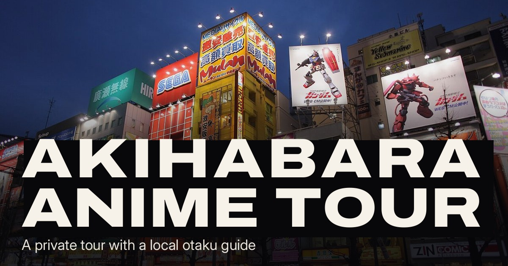

1Red Accent夜景フルブリード＋深めのグラデーション、「ANIME」だけを赤で抜く

2Red Panel左下コーナーに赤のベタパネルを敷き、クリーム文字を載せるポスター構成

3Mono Red写真を白黒に落とし、1行目クリーム＋2行目を丸ごと赤

4Duotone Big赤デュオトーンの写真＋特大タイトル、タイトに切り抜いた構図

5Poster Blockタイトルの背後に黒ブロックをオフセットで敷く、印刷ポスター風
